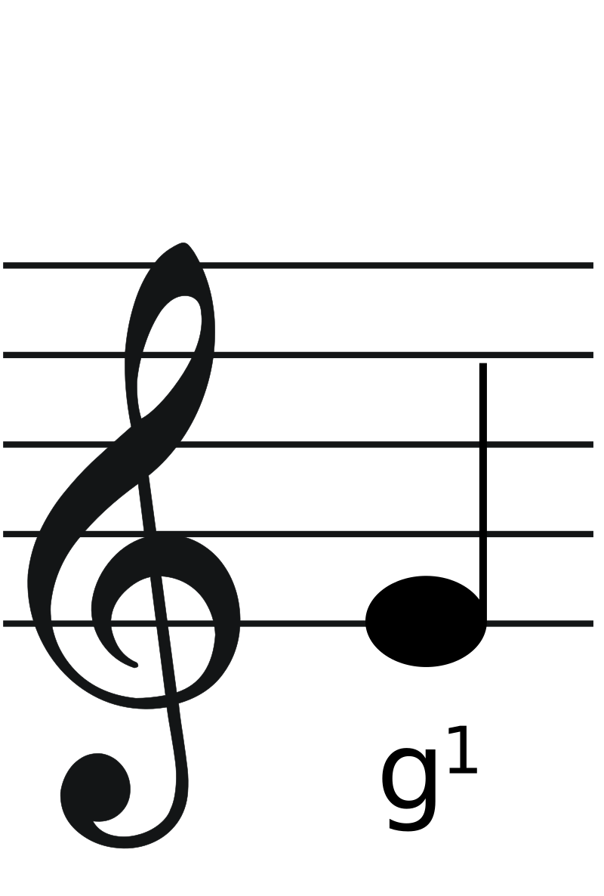
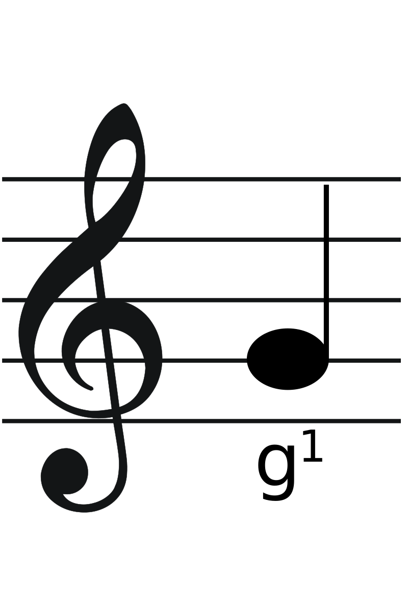
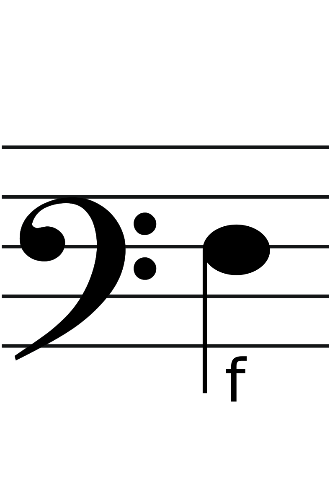
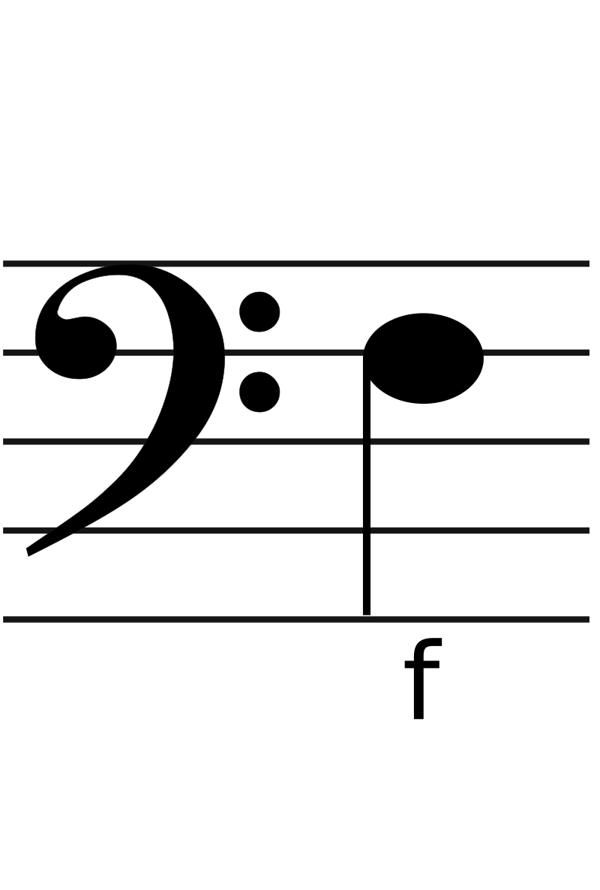
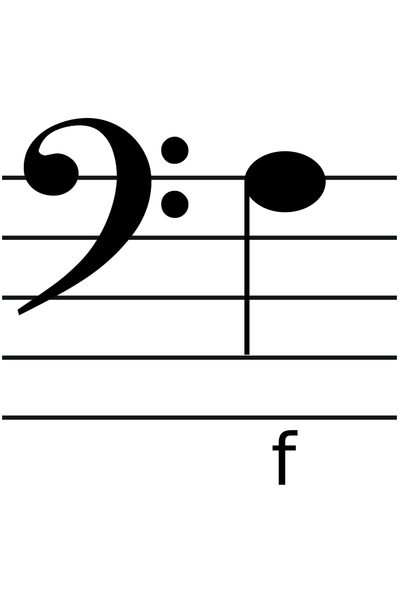
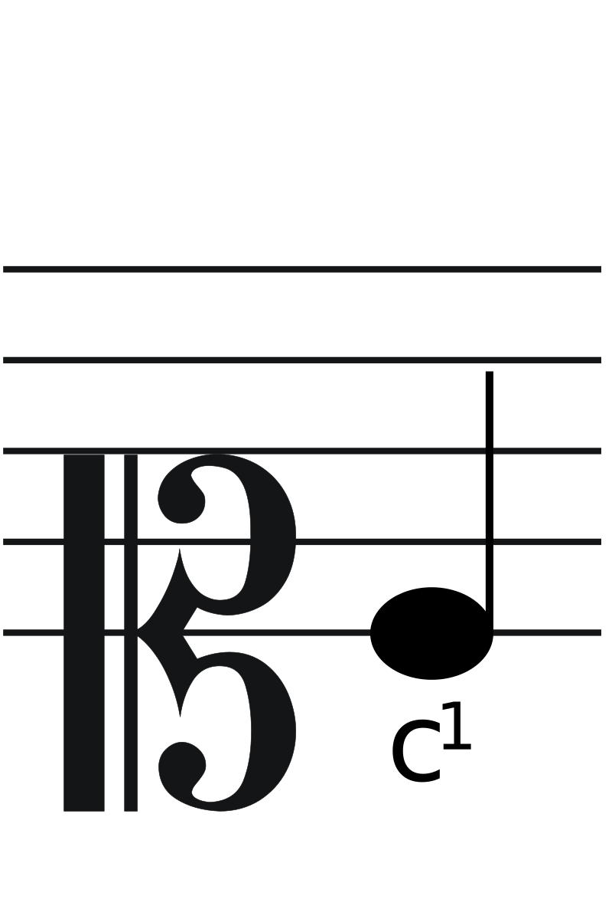
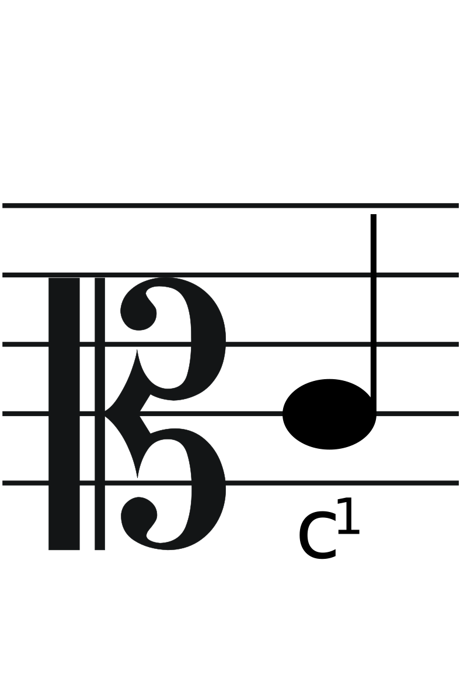
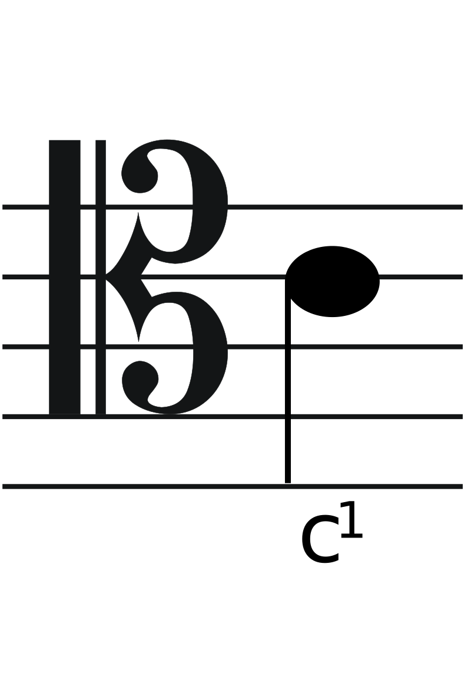

Klucze Muzyczne
Klucze
Klucz to znak, który stawiamy na początku systemu liniowego. Wyznacza on położenie na pięciolinii dźwięku zwanego kluczowym. Rozróżniamy rodzaje kluczy: G, F oraz C
   
  
Klucze umieszczano w różnych miejscach systemu liniowego, w zależności od tego, dla jakiego głosu był przeznaczony.
Obecnie jednak odeszło się od używania większości tych kluczy, aby poprawić czytelność zapisu.
Ciekawostka
Jak wspominaliśmy, każdy klucz swoim kształtem wyznacza położenie nuty kluczowej.
Kształty te pochodzą od liter greckich umieszczanych dawniej na początku linii. Wybór tych liter nie był przypadkowy - pod nimi w tonacjach kościelnych znajdowały się półtony.